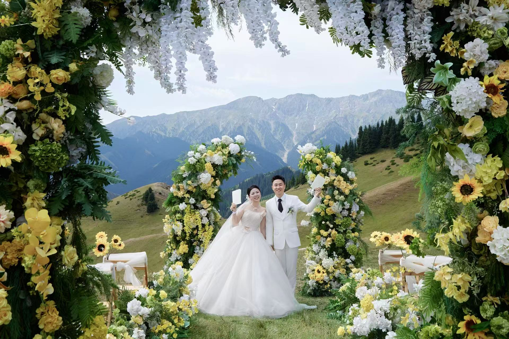

OUR DAY · 2026.10.01
顾振刚 & 赵国艳
从海风抵达山野
A NEW CHAPTER BEGINS
从此，故事有了我们
从湖边的晚霞、车窗里的风，到山野花环下的白色礼服，我们把一路走来的片段收进这一封请柬。谢谢你来，见证我们把喜欢写成日常，把日常走成以后。
A NEWSPAPER OF US
从海风，到山野
先是海边的风，后来是林间的光，最后我们在雪山和花环之间，把名字放在了同一页。
COUNTING DOWN TO THE DAY
--天
--时
--分
--秒
两段影像，留住风和光
点击封面打开黑色浮层播放。视频不会自动播放，关闭时会暂停并重置进度。
THANK YOU FOR BEING HERE
现场见，敬请光临
愿你带着轻松的心情来，带着一份开心回去。我们在天水百宴廷等你，一起把这一场山野里的相逢，过成值得记住的日子。
顾振刚 · 赵国艳